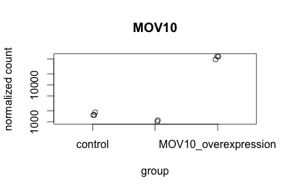
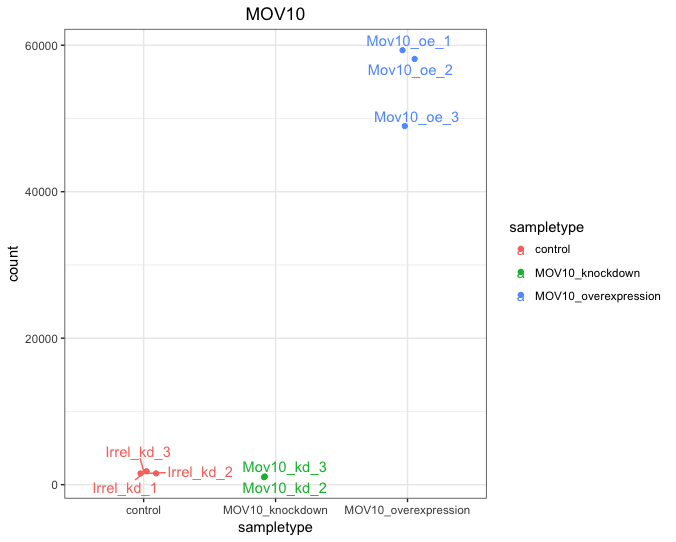
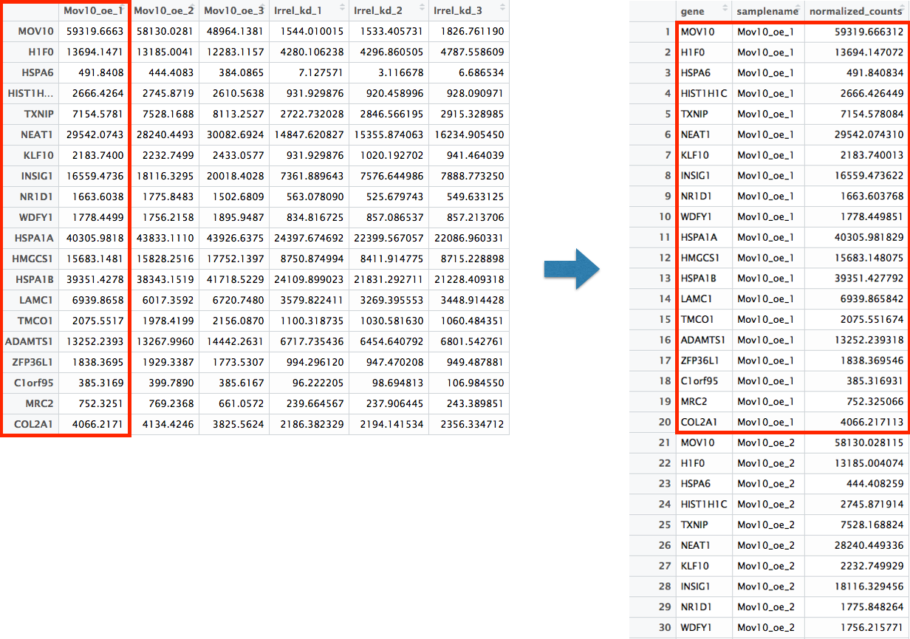
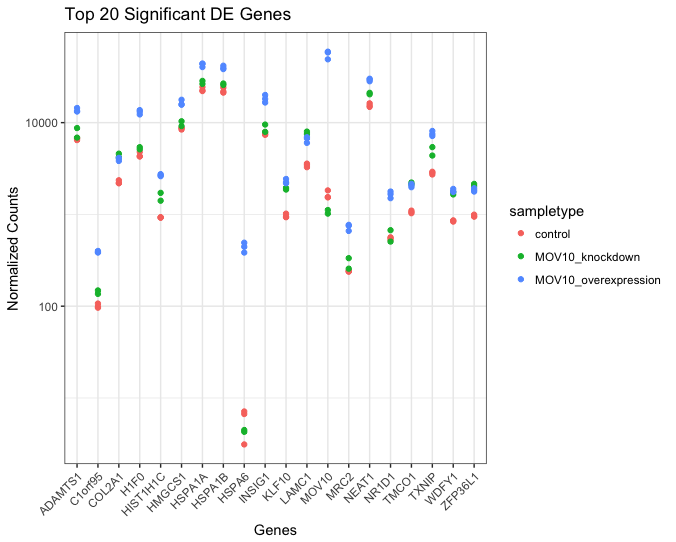
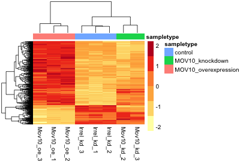
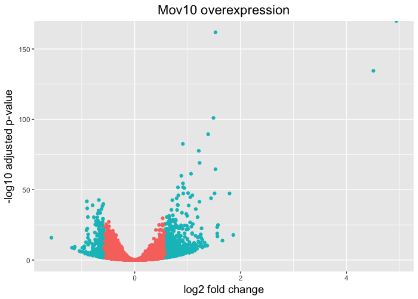
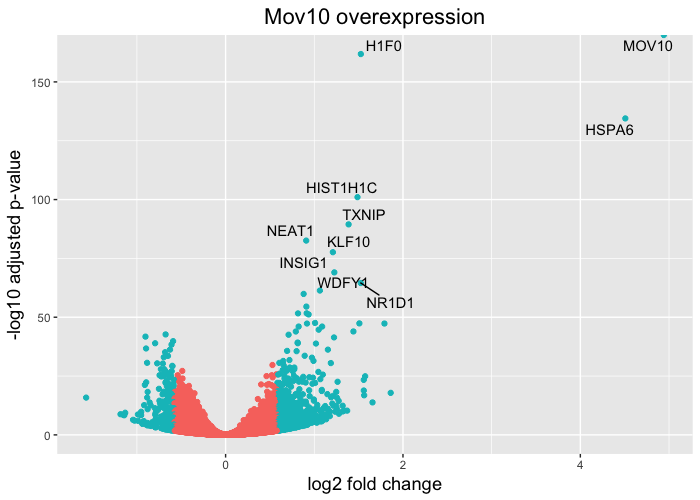

Data Visualization
Approximate time: 75 minutes
Learning Objectives
- Exploring our significant genes using data visualization
- Using volcano plots to evaluate relationships between DEG statistics
- Plotting expression of significant genes using heatmaps
Extracting significant differentially expressed genes
What we noticed is that the FDR threshold on it's own doesn't appear to be reducing the number of significant genes. With large significant gene lists it can be hard to extract meaningful biological relevance. To help increase stringency, one can also add a fold change threshold. The summary() function doesn't have an argument for fold change threshold
NOTE: the
results()function does have an option to add a fold change threshold and subset the data this way. Take a look at the help manual using?resultsand see what argument would be required. However, rather than subsetting the results, we want to return the whole dataset and simply identify which genes meet our criteria.
Let's first create variables that contain our threshold criteria:
### Set thresholds
padj.cutoff <- 0.05
lfc.cutoff <- 0.58
The lfc.cutoff is set to 0.58; remember that we are working with log2 fold changes so this translates to an actual fold change of 1.5 which is pretty reasonable. Let's create vector that helps us identify the genes that meet our criteria:
threshold <- res_tableOE$padj < padj.cutoff & abs(res_tableOE$log2FoldChange) > lfc.cutoff
We now have a logical vector of values that has a length which is equal to the total number of genes in the dataset. The elements that have a TRUE value correspond to genes that meet the criteria (and FALSE means it fails). How many genes are differentially expressed in the Overexpression compared to Control, given our criteria specified above? Does this reduce our results?
length(which(threshold))
To add this vector to our results table we can use the $ notation to create the column on the left hand side of the assignment operator, and the assign the vector to it instead of using cbind():
res_tableOE$threshold <- threshold
Now we can easily subset the results table to only include those that are significant using the subset() function:
sigOE <- data.frame(subset(res_tableOE, threshold==TRUE))
Using the same thresholds as above (padj.cutoff < 0.05 and lfc.cutoff = 0.58), create a threshold vector to report the number of genes that are up- and down-regulated in Mov10_knockdown compared to control.
threshold_KD <- res_tableKD$padj < padj.cutoff & abs(res_tableKD$log2FoldChange) > lfc.cutoff
Take this new threshold vector and add it as a new column called threshold to the res_tableKD which contains a logical vector denoting genes as being differentially expressed or not. How many genes are differentially expressed in the Knockdown compared to Control? Subset the data to keep only the significant genes.
res_tableKD$threshold <- threshold_KD
sigKD <- data.frame(subset(res_tableKD, threshold==TRUE))
Visualizing the results
When we are working with large amounts of data it can be useful to display that information graphically to gain more insight. Visualization deserves an entire course of its own, but during this lesson we will get you started with some basic and more advanced plots commonly used when exploring differential gene expression data.
Let's start by loading a few libraries:
# Load libraries
library(DESeq2)
library(reshape)
library(ggplot2)
library(ggrepel)
library(DEGreport)
library(RColorBrewer)
library(pheatmap)
Plotting signicant DE genes
One way to visualize results would be to simply plot the expression data for a handful of genes. We could do that by picking out specific genes of interest or selecting a range of genes:
Using DESeq2 plotCounts() to plot expression of a single gene
To pick out a specific gene of interest to plot, for example Mov10, we can use the plotCounts() from DESeq2:
# Plot expression for single gene
plotCounts(dds, gene="MOV10", intgroup="sampletype")

This function only allows for plotting the counts of a single gene at a time.
Using ggplot2 to plot expression of a single gene
If you wish to change the appearance of this plot, we can save the output of plotCounts() to a variable specifying the returnData=TRUE argument, then use ggplot():
# Save plotcounts to variable
d <- plotCounts(dds, gene="MOV10", intgroup="sampletype", returnData=TRUE)
# Adding samplenames to data frame
d$name <- rownames(d)
# Plotting the MOV10 normalized counts
ggplot(d, aes(x=sampletype, y=count, color=sampletype)) +
geom_point(position=position_jitter(w=0.1,h=0)) +
geom_text_repel(aes(label = name)) +
theme_bw() +
ggtitle("MOV10") +
theme(plot.title=element_text(hjust=0.5))
Note that in the plot below (code above), we are using
geom_text_repel()from the 'ggrepel' R package to label our individual points on the plot.

Using ggplot2 to plot multiple genes (e.g. top 20)
Often it is helpful to check the expression of multiple genes of interest at the same time. While this isn't easily done using the plotCounts() function, we can use ggplot() to do this after performing some data wrangling.
We are going to plot the normalized count values for the top 20 differentially expressed genes (by padj values).
To do this, we first need to determine the gene names of our top 20 genes by ordering our significant results and extracting the top 20 genes:
## Order significant results by padj values
sigOE_ordered <- sigOE[order(sigOE$padj), ]
top20_sigOE_genes <- rownames(sigOE_ordered[1:20, ])
Then, we can extract the normalized count values for these top 20 genes:
## normalized counts for top 20 significant genes
normalized_counts <- counts(dds, normalized=T)
top20_sigOE_norm <- normalized_counts[top20_sigOE_genes, ]
Now that we have the normalized counts for each of the top 20 genes for all 8 samples, to plot using ggplot(), we need to gather the counts for all samples into a single column to allow us to give ggplot the one column with the values we want it to plot.
The melt() function in the reshape R package will perform this operation and will output the normalized counts for all genes for Mov10_oe_1 listed in the first 20 rows, followed by the normalized counts for Mov10_oe_2 in the next 20 rows, so on and so forth.

## use melt to modify the format of the data frame
melted_top20_sigOE <- data.frame(melt(top20_sigOE_norm))
## check the column header in the "melted" data frame
View(melted_top20_sigOE)
## add column names that make sense
colnames(melted_top20_sigOE) <- c("gene", "samplename", "normalized_counts")
Now, if we want our counts colored by sample group, then we need to combine the metadata information with the melted normalized counts data into the same data frame for input to ggplot():
## add metadata to "melted" dataframe
meta$samplename <- rownames(meta)
melted_top20_sigOE <- merge(melted_top20_sigOE, meta)
The merge() will merge 2 data frames with respect to the "samplename" column, i.e. a column with the same colname in both data frames.
Now that we have a data frame in a format that can be utilised by ggplot easily, let's plot!
## plot using ggplot2
ggplot(melted_top20_sigOE) +
geom_point(aes(x = gene, y = normalized_counts, color = sampletype)) +
scale_y_log10() +
xlab("Genes") +
ylab("Normalized Counts") +
ggtitle("Top 20 Significant DE Genes") +
theme_bw() +
theme(axis.text.x = element_text(angle = 45, hjust = 1)) +
theme(plot.title=element_text(hjust=0.5))

Heatmap
In addition to plotting subsets, we could also extract the normalized values of all the significant genes and plot a heatmap of their expression using pheatmap().
### Extract normalized expression for significant genes
norm_OEsig <- normalized_counts[rownames(sigOE),]
Now let's draw the heatmap using pheatmap:
### Annotate our heatmap (optional)
annotation <- data.frame(sampletype=meta[,'sampletype'],
row.names=rownames(meta))
### Set a color palette
heat.colors <- brewer.pal(6, "YlOrRd")
### Run pheatmap
pheatmap(norm_OEsig, color = heat.colors, cluster_rows = T, show_rownames=F,
annotation= annotation, border_color=NA, fontsize = 10, scale="row",
fontsize_row = 10, height=20)

NOTE: There are several additional arguments we have included in the function for aesthetics. One important one is
scale="row", in which Z-scores are plotted, rather than the actual normalized count value. Z-scores are computed on a gene-by-gene basis by subtracting the mean and then dividing by the standard deviation. The Z-scores are computed after the clustering, so that it only affects the graphical aesthetics and the color visualization is improved.
Volcano plot
Heatmaps are great to look at the expression levels of a fairly large number of genes, but for more of a global view we can use the volcano plot. Here, the log transformed adjusted p-values are plotted on the y-axis and log2 fold change values on the x-axis. There is no built-in function for the drawing volcano plots in DESeq2, just as there is none for heatmaps, but we can easily draw it using ggplot2.
To generate a volcano plot, we have a column in our results data indicating whether or not the gene is considered differentially expressed based on p-adjusted and log2 foldchange values. First, we need to convert our results object into a data frame.
resOE_df <- data.frame(res_tableOE)
View(resOE_df)
Since we have the threshold column, we can start plotting. The geom_point object is most applicable, as this is essentially a scatter plot:
# Volcano plot
ggplot(resOE_df) +
geom_point(aes(x=log2FoldChange, y=-log10(padj), colour=threshold)) +
ggtitle("Mov10 overexpression") +
xlab("log2 fold change") +
ylab("-log10 adjusted p-value") +
theme(legend.position = "none",
plot.title = element_text(size = rel(1.5), hjust = 0.5),
axis.title = element_text(size = rel(1.25)))

This is a great way to get an overall picture of what is going on, but what if we also wanted to know where the top 10 genes (lowest padj) in our DE list are located on this plot? We could label those dots with the gene name on the Volcano plot using geom_text_repel().
To make this work we have to take the following 3 steps: (Step 1) Create a new data frame sorted or ordered by padj (Step 2) Indicate in the data frame which genes we want to label by adding a logical vector to it, wherein "TRUE" = genes we want to label.
resOE_df_ordered <- resOE_df[order(resOE_df$padj), ]
resOE_df_ordered$genelabels <- rownames(resOE_df_ordered) %in% rownames(resOE_df_ordered[1:10,])
View(resOE_df_ordered)
(Step 3) Finally, we need to add the geom_text_repel() layer to the ggplot code we used before, and let it know which genes we want labelled.
ggplot(resOE_df_ordered) +
geom_point(aes(x = log2FoldChange, y = -log10(padj), colour = threshold)) +
geom_text_repel(aes(x = log2FoldChange, y = -log10(padj), label = ifelse(genelabels == T, rownames(resOE_df_ordered),""))) +
ggtitle("Mov10 overexpression") +
xlab("log2 fold change") +
ylab("-log10 adjusted p-value") +
theme(legend.position = "none",
plot.title = element_text(size = rel(1.5), hjust = 0.5),
axis.title = element_text(size = rel(1.25)))

The ifelse() function is a simple function that outputs a vector if a certain condition is T. In the above example, it checks if the value in the resOE_df_ordered$genelevel column is TRUE, in which case it will output the row name for that row (rownames(resOE_df_ordered)). If the value in the genelevel column is FALSE it will output nothing (""). This is good way to inform geom_point() about genes we want labeled.
NOTE: The package 'DEGreport' can make the top20 genes and the volcano plots generated above by writing a few lines of simple code. While you can customize the plots above, you may be interested in using the easier code. Below are examples for code to create these plots:
DEGreport::degPlot(dds = dds, res = res, n=20, xs="type", group = "condition")
DEGreport::degVolcano(
as.data.frame(res[,c("log2FoldChange","padj")]), # table - 2 columns
plot_text=as.data.frame(res[1:10,c("log2FoldChange","padj","id")])) # table to add names
# Available in the newer version for R 3.4
DEGreport::degPlotWide(dds = dds, genes = row.names(res)[1:5], group = "condition")
This lesson has been developed by members of the teaching team at the Harvard Chan Bioinformatics Core (HBC). These are open access materials distributed under the terms of the Creative Commons Attribution license (CC BY 4.0), which permits unrestricted use, distribution, and reproduction in any medium, provided the original author and source are credited.
- Materials and hands-on activities were adapted from RNA-seq workflow on the Bioconductor website